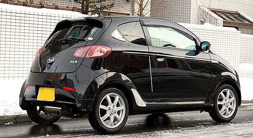
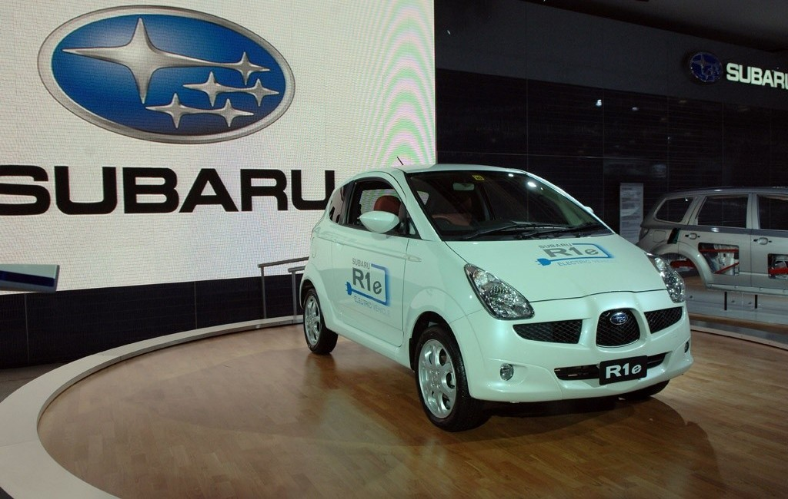
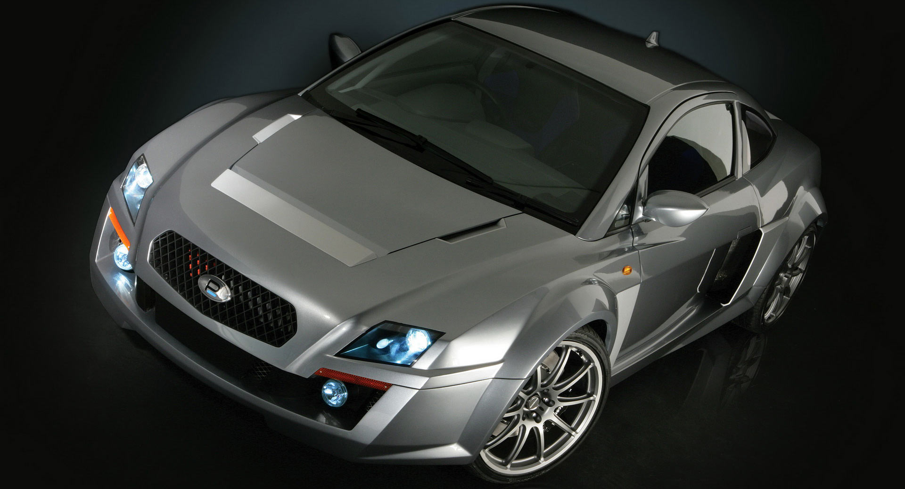
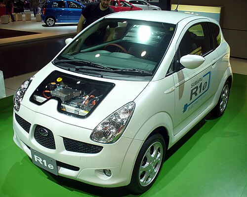
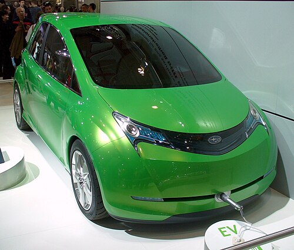

Back to main


Subaru R1 — автомобиль компании Subaru, выпускался в Японии с 4 января 2005 года по март 2010 года. Является двухдверным вариантом Subaru R2 с укороченной колёсной базой и уменьшенным кузовом. С этими моделями компания Subaru пытается вернуться на перспективный рынок микролитражных автомобилей («keicar» имеют льготное налогообложение в Японии).
В модели R1 не использована максимальная разрешённая длина для автомобилей безналогового в Японии класса keicar, как это делают все остальные игроки, начиная с 1989 года Autozam Carol до Suzuki Twin и европейской модели Smart Fortwo. В России данная модель официально не продавалась, но можно встретить подержанные праворульные «Subaru R1» из Японии.
Вплоть до конца 2005 года на автомобили «Subaru R1» устанавливали один двигатель «EN07», в средней модификации из трёх возможных. Рабочий объём данного двигателя «EN07» (диаметр цилиндров и ход поршней 56 х 66,8 мм) — всего 658 «кубиков». Затем, как и в модели R2, стали устанавливать данный двигатель в трёх разных исполнениях (в зависимости от модификации машины). В версии I двигатель развивает 46 л.с., в продвинутом исполнении R он развивает до 54 л. с. при 6 400 об/мин, наибольший крутящий момент — 63 Н·м без наддува; предусмотрен также вариант S с нагнетателем и интеркулером — мощностью 63 л.с. На фоне всех этих технических характеристик четырёхдверный хетчбэк Subaru R1 может разогнаться до 130 км/час.
R1 позиционируется как персональное авто или как второй автомобиль для супружеских пар среднего возраста; доступна комбинация натуральной кожи и алькантары. Все модификации R1 оснащаются системой CVT как для переднеприводных, так и для полноприводных модификаций. В рекламных материалах модель R1 часто сравнивают с Subaru 360 — первым автомобилем компании Subaru.
На базе модели R1 разработаны:



Мотоколяска на электрических батареях, находящаяся в стадии развития и тестирования. Автомобиль разрабатывается совместно с Токийской энергетической компанией. В настоящее время построены и проходят испытания 10 прототипов электрокара. Автомобиль на батареях может пройти до 80 км и разогнаться до 100 км/ч.
Прототип — это двухдверный и двухместный бензиновый автомобиль на основе Subaru R1. Этот электромобиль получил повышенный интерес благодаря современной технологии батареи, её малых габаритов и большой производительности.
Автомобиль использует литий-ионный аккумулятор, разработанный в сотрудничестве с NEC, и может заряжаться до 80 % ёмкости за восемь минут, используя специальное быстрое зарядное устройство, или до 100 % заряда за восемь часов при стандартной зарядке. Срок службы батареи составляет не менее 10 лет или около 240 тыс км. Tokyo Electric Power планирует оборудовать 150 станций зарядки электромобилей.
Другой прототип электрического автомобиля, Subaru G4e, является продолжением R1e, с улучшенной батареей.

Subaru G4e — электромобиль японского автопроизводителя Subaru, находящийся в стадии разработки и тестирования. Он был впервые представлен в 2007 году на Токийском автосалоне. Машина пятиместная и имеет функциональный интерьер и дизайн. Коэффициент аэродинамического сопротивления 0,276. Автомобиль на батареях может пройти до 200 км. Полный цикл зарядки от домашней сети переменного тока длится около восьми часов. Быстрая зарядка до 80 % ёмкости батареи производится всего за 15 минут. На G4e используются литий-ионные батареи, специально разработанные Subaru. Аккумулятор обеспечивает напряжение в 346 вольт, и находится под полом пассажирского места.